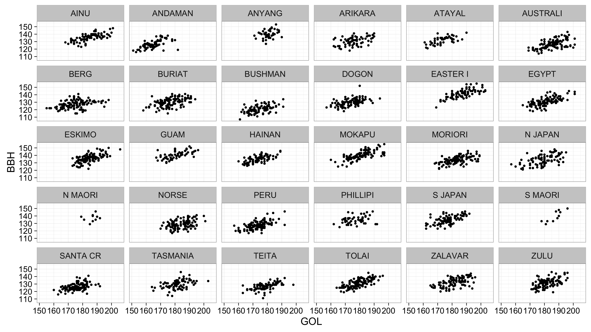

Homework Assignment #2
Due Feb. 2nd
For each step, make sure your markdown document prints the relevant output, so that I can see that your code works.
Problem 1
- Load the Howell’s craniometric dataset into R. This dataset includes 82 measurements on 2524 human crania from 28 populations (measurement abbreviations detailed in this pdf). Note that a 0 indicates missing data in this dataset, so make sure to specify this when you read in the data.
- Evaluate the structure of the dataframe using the
str()function to make sure that it got read in correctly. It should have 2524 observations of 86 variables. - Write a new function called
geomean()that accepts a vector (of any length) as an argument and returns the geometric mean of its arguments.- Note: Your function must deal properly with missing values (NA) as arguments.
- Note: the geometric mean is defined as the n-th root of the product of n numbers. Thus the geometric mean of 9, 6, 5, 4, and 3 would be calculated like this
product <- prod(c(9, 6, 5, 4, 3)) geomean <- product ^ (1/5) geomean## [1] 5.03627 - create a
resultsvector, then write aforloop to go through each of the 2524 crania in the Howell’s dataset, calculate the geometric mean of all available measurements, and then stores this in the appropriate slot in theresultsvector. Print only first 100 elements of theresultsvector to your markdown document. - add this as a new column called
geomeanto the crania dataframe
Problem 2
- Using
dplyr, calculate the mean of the GOL, XCB, ZYB and SIS measurements for each population group by sex. (i.e., calculate the mean value separately for NORSE males and NORSE females, and likewise for all groups). The resulting data frame should only have 6 columns. (eliminate all the extra columns). - Recreate this figure exactly (including the theme) using the full cranial dataset

Problem 3
Recreate this figure using the tools in ggplot2. The data come from the Zachos et al 2001 deep sea oxygen isotope dataset. Make a line graph of the o18 values against time, and include rectangular overlays that show the geological epochs of the Cenozoic.

Use these approximate start dates for the geological epochs:
epoch = c("Paleocene", "Eocene", "Oligocene", "Miocene", "Pliocene", "Pleistocene", "Holocene")
start = c(65, 58.8, 33.9, 23.03, 5.5, 1.8, 0.01)Note: The original dataset is noisy. Use a convolution filter with the filter() function to reduce noise in the dataset.
Note one more thing: This is a good example of a case in which you need separate dataframes for separate layers.